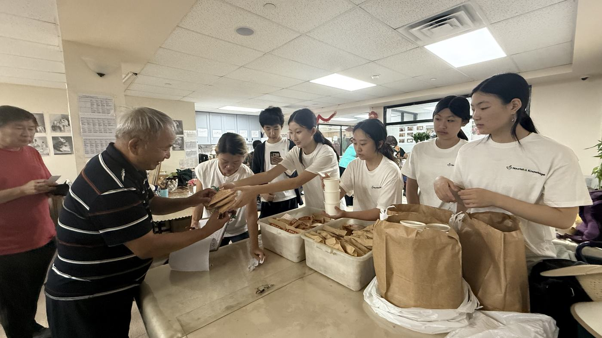
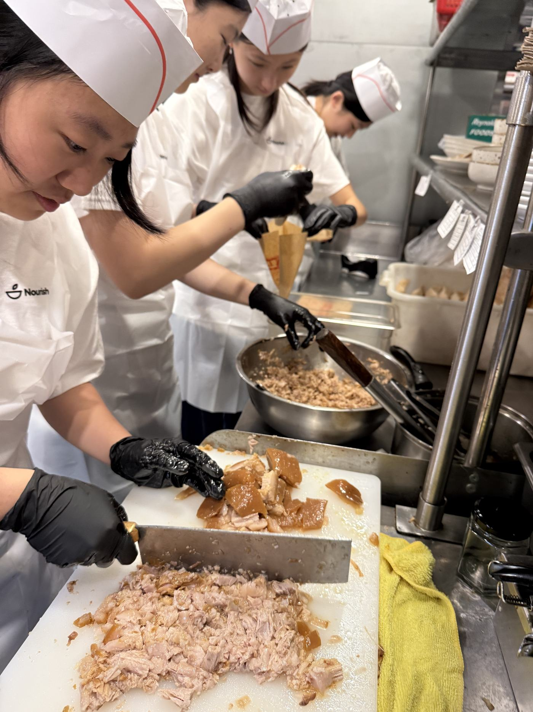
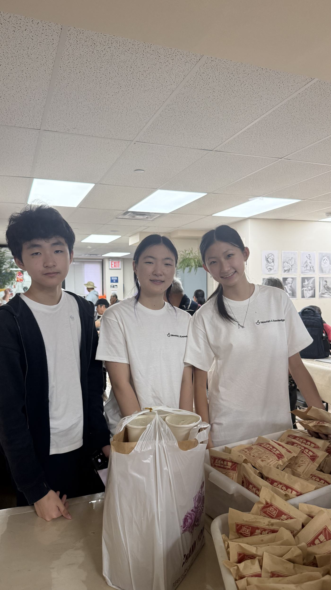

Local businesses
Share surplus stock, lend a kitchen or a room for an evening, or send a team for a shift. Small contributions, repeated, feed more people than one large cheque.
Partnership
Ingredients, space, expertise, and reach. Partners supply the things we cannot cook up on our own.


Why it works
A restaurant with surplus produce, a school with a free gymnasium on Saturdays, a company with forty people looking for something useful to do. Each one turns into meals faster than a fundraiser does.
We keep partnerships small, specific, and easy to say yes to. Tell us what you have and we will tell you exactly where it lands.
Ways in
Three routes, all of them open. Most partners start with one and grow into another.
Share surplus stock, lend a kitchen or a room for an evening, or send a team for a shift. Small contributions, repeated, feed more people than one large cheque.
Bring learning and food to more families through programs we design side by side, and point students toward support before a hard month becomes a hard year.
Run outreach and events together so the same effort reaches further. Two organizations at one table beats two half-full rooms.
The arrangement
Tell us what you have. We will tell you what it feeds.How every partnership starts

Send a short note about your organization. We will come back with a concrete idea, not a brochure.